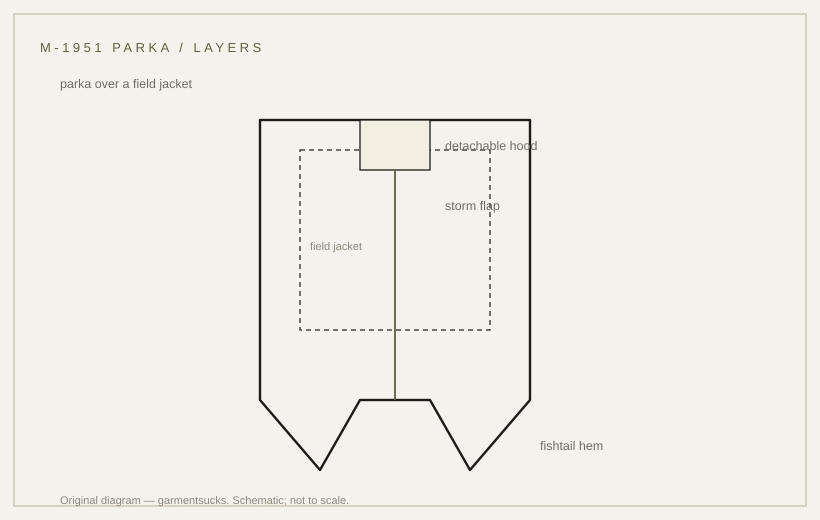

history · 1951
The M-1951 fishtail parka: an outer layer, later a coat
The fishtail parka: an outer layer built to go over the field jacket, later worn over a suit.
probable Published 2026-11-13 · last checked 2026-11-13

1. Summary
The M-1951 parka is a long over-garment with a detachable hood and liner, a flap">storm flap over the front closure, and a fishtail hem that can be drawn between the legs or snapped up.
It entered service in the Korean War period and became a civilian coat in 1960s Britain. Confidence: probable — the construction is described by secondary sources; no primary specification was opened.
2. What this is
Parka: a long outer garment worn over other clothing. Fishtail: a hem split into two tails that can be tied or snapped. Storm flap: a flap covering the closure against weather.
3. Origin and context
The M-1951 parka belongs to the post-war US field clothing system and is associated with the Korean War. It was designed as an outer layer over the field jacket, with a separate hood and liner.
In 1960s Britain, surplus parkas were bought cheaply and worn by Mods over suits — a use the quartermaster did not plan.
4. How it works
The parka adds a wind- and weather-resistant shell over the insulating field jacket; the fishtail lets the wearer tie the hem down or fold it up out of the way. The detachable hood and liner let the same shell cover different temperatures.
The layering logic is stated in the garment's role; the specific thermal performance is not measured in any opened source.
5. Construction
Cotton shell, storm flap over the front closure, fishtail hem with snaps or ties, detachable hood and liner. The closure and hem are the load-bearing details.
Work order inferred from garment construction; no opened document states it.
6. Variants
| Variant | Period | Difference |
|---|---|---|
| M-1948 parka | late 1940s | predecessor over-garment; relationship not verified |
| M-1951 parka | 1951, US | detachable hood and liner, fishtail hem |
| M-1965 parka | 1965, US | later field parka with different hood and liner |
| Civilian fishtail | 1960s Britain | surplus worn over suits by Mods |
Competing accounts
Secondary accounts differ on two points: whether the fishtail hem appears first on the M-1948 or on the M-1951, and whether the parka's service entry is 1951 or later in the Korean War. No specification was opened. A dated specification or a labelled original would settle it; the 1951 designation is the safest statement, and the M-1948 relationship stays unverified.
| Account | Source (tier) | What it claims | Evidence offered | Weak point |
|---|---|---|---|---|
| Designation account | T3 | M-1951 parka enters service around 1951 | model designation | no specification opened |
| Predecessor account | T3 | Fishtail hem and over-garment logic begin with the M-1948 | reproducer histories | no document cited |
| Civilian account | T4 | Surplus parkas became Mod coats in the 1960s | cultural histories | not a garment record |
7. Telling an original from a reproduction
Look for the fishtail hem with its ties or snaps, a storm flap over the zip, a detachable hood, and a liner with buttons. Reproductions often simplify the fishtail or omit the liner.
8. Common mistakes
Treating the parka as a field jacket (it is an outer layer over one); assuming the fishtail is decoration; dating a surplus coat from its civilian use.
9. How to read it in wear
The parka reads long and loose: it sits over the jacket and below the hip, and the tied fishtail changes the silhouette from a coat to a bell. Worn open over a suit, as the Mods did, the coat keeps its length but loses its sealed shape, which is the point of the civilian use.
10. Modern designer trail
The fishtail parka is a recurring reference in menswear and in Mod revival styling. No direct-influence claim is made here.
11. Specification
Recorded statements only on the left; right column is a reproduction suggestion.
| Recorded in sources | Reproduction suggestion |
|---|---|
| Detachable hood and liner; storm flap; fishtail hem (secondary descriptions) | Shell: cotton, 220–260 gsm |
| Service entry around 1951 (designation; secondary) | Length mid-thigh, hem split with ties |
| M-1948 relationship: not verified | — |
12. Questions and exercises
1) Does the hem split into two tails? 2) Is there a storm flap over the closure? 3) Can the hood be detached? 4) Which of these details does a surplus coat share with the civilian versions sold today? 5) Can you tell the liner buttons from the shell buttons without turning the coat over?

Glossary
- Fishtail
- Hem split into two tails.
- Storm flap
- Flap covering the closure.
- Liner
- Separate warm layer buttoned inside.
- Parka
- Long outer garment worn over clothing.
Sources
- [S1] [T3] Secondary references on the M-1951 parka (not opened)
- [S2] [T4] Mod-era cultural accounts of surplus parkas (not opened)
- [S1] [T1] Wikimedia Commons object photograph — M-51 fishtail parka, public domain
Claims & sources
| Claim | Source | Tier | URL | Status |
|---|---|---|---|---|
| Hood, flapped pockets, front closure and fishtail hem | Object photograph (Commons, PD) | T1 | visible in photo | |
| Service entry around 1951 | Model designation; secondary | T3 | unverified (no primary opened) | |
| M-1948 relationship | Reproducer histories | T3 | unverified | |
| Surplus worn over suits by 1960s Mods | Cultural histories | T4 | partially verified (secondary) |